Regression comparison
Download resultsDataset
Training setting
Repulsion weight
Repulsion location
Compare repulsion locations
Method
Random points redraw every step and exclude all training inputs. Training and random use B points; combined uses 2B. Prediction axes match within each DE or BDKN row.
Functional repulsion
BetterWorse · relative rank within each column
DE
| Repulsion inputs | RMSE | NLL | Training seconds |
|---|---|---|---|
| Training | 58.55073 | 27.59123 | 6.41 |
| Random | 55.27644 | 6.22746 | 6.82 |
| Training + random | 56.02636 | 6.60433 | 6.86 |
BDKN
| Repulsion inputs | RMSE | NLL | Training seconds |
|---|---|---|---|
| Training | 57.10928 | 9.53091 | 6.54 |
| Random | 55.74310 | 5.24330 | 6.96 |
| Training + random | 74.22096 | 5.46178 | 7.00 |
Stage 1 · total loss and data fit
X: log · Y: log
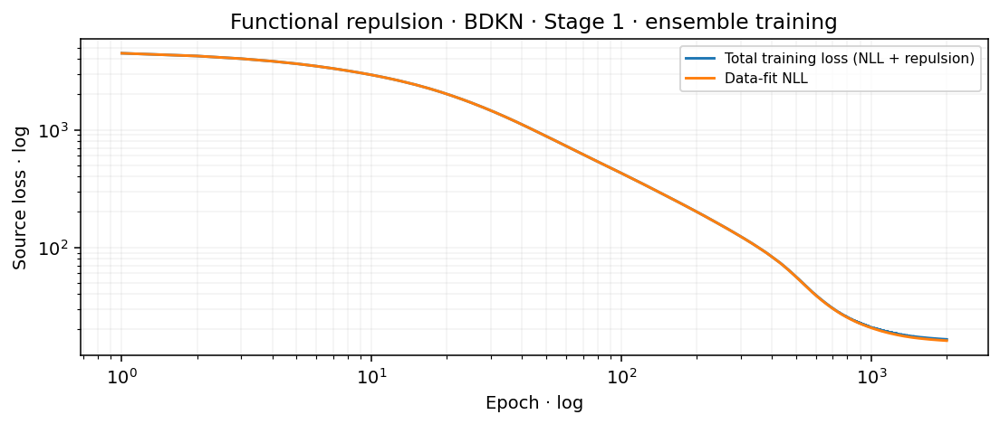
X: log · Y: log
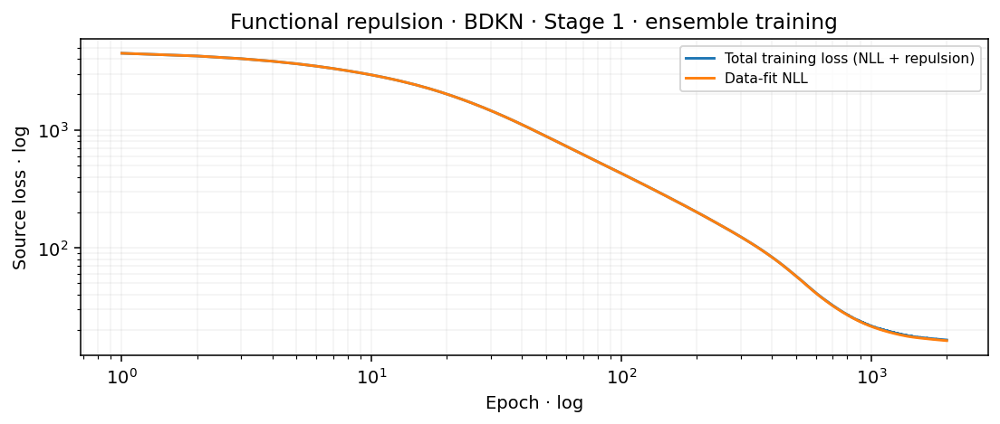
X: log · Y: log
Repulsion loss R only
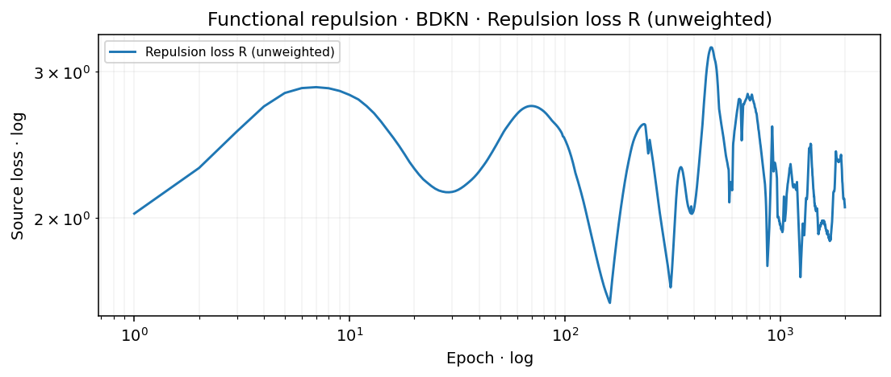
X: log · Y: log
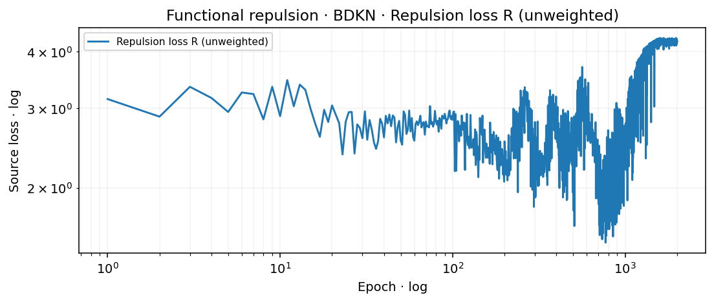
X: log · Y: log
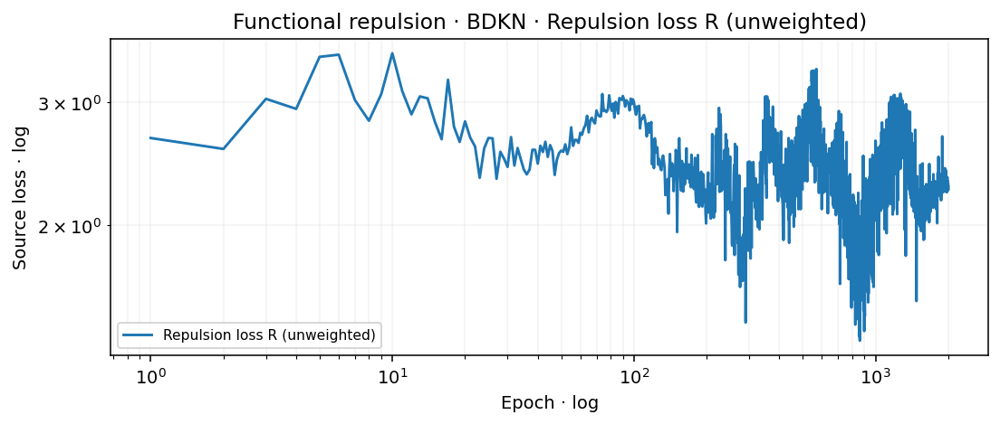
X: log · Y: log
Stage 2 · Bayesian marginal NLL
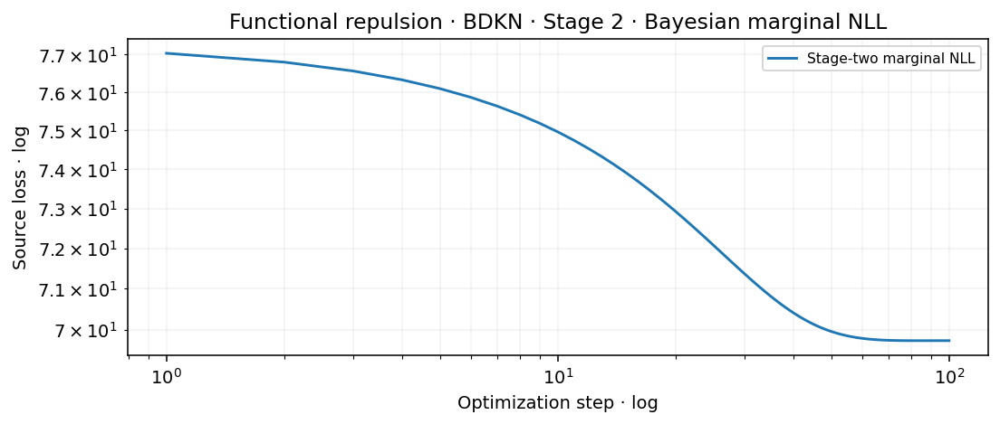
X: log · Y: log
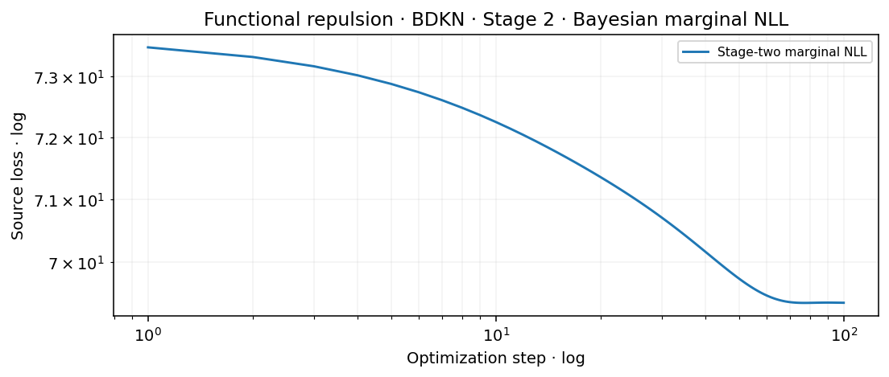
X: log · Y: log
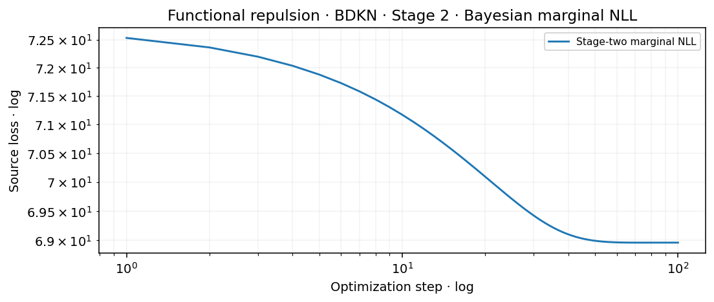
X: log · Y: log
First-order repulsion
BetterWorse · relative rank within each column
DE
| Repulsion inputs | RMSE | NLL | Training seconds |
|---|---|---|---|
| Training | 57.71080 | 18.91478 | 12.46 |
| Random | 59.43238 | 7.16260 | 13.30 |
| Training + random | 57.12995 | 7.41786 | 13.29 |
BDKN
| Repulsion inputs | RMSE | NLL | Training seconds |
|---|---|---|---|
| Training | 55.96935 | 8.27437 | 12.59 |
| Random | 53.89919 | 5.51032 | 13.44 |
| Training + random | 49.84386 | 5.63568 | 13.43 |
Stage 1 · total loss and data fit
Repulsion loss R only
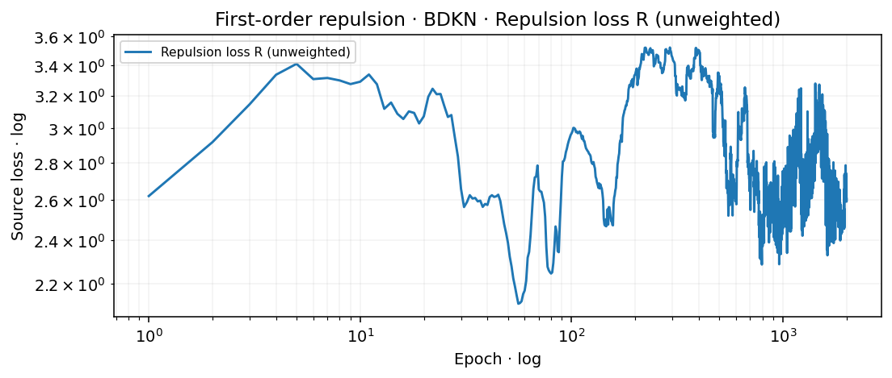
X: log · Y: log
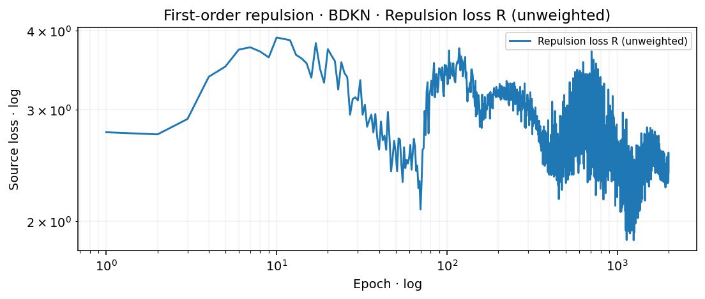
X: log · Y: log
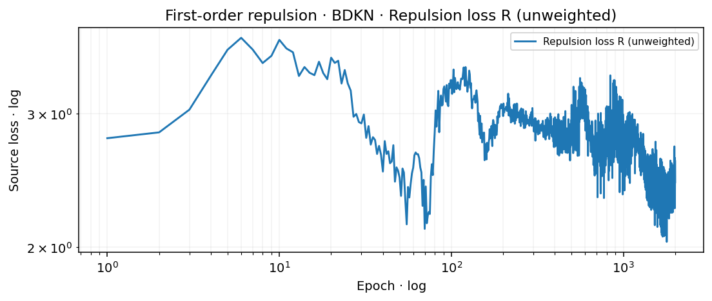
X: log · Y: log
Stage 2 · Bayesian marginal NLL
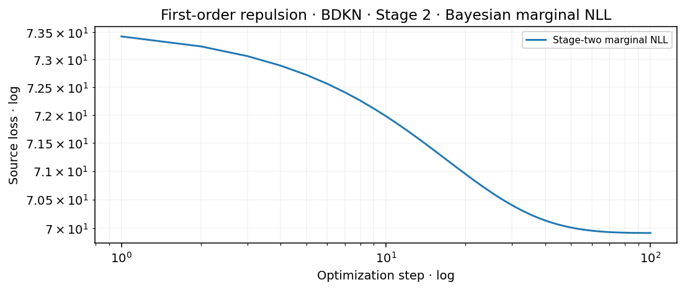
X: log · Y: log
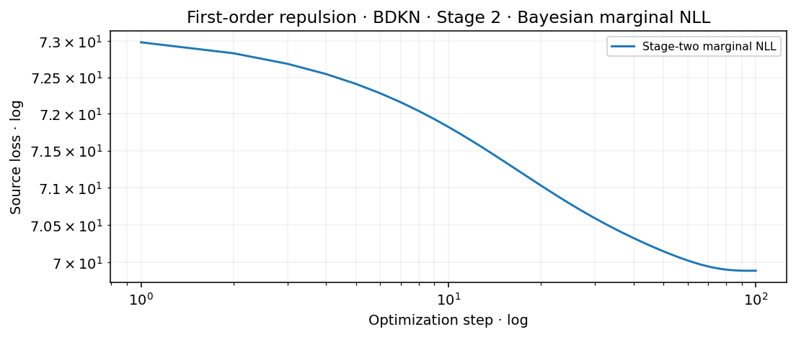
X: log · Y: log
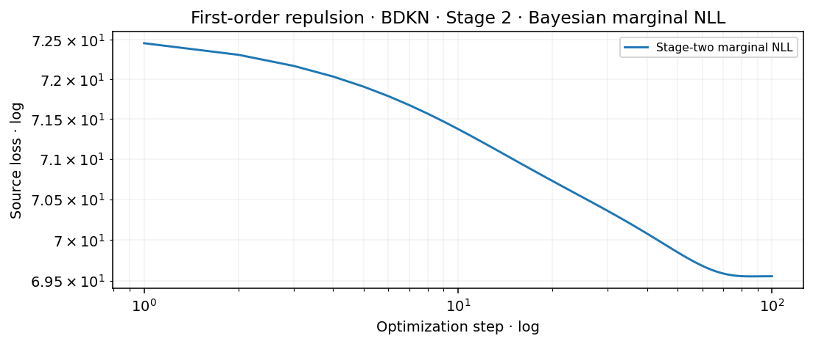
X: log · Y: log
Weight repulsion · location-independent
The loss compares network parameters directly. These same results apply to every location.
| Stage | RMSE | NLL | Training seconds |
|---|---|---|---|
| DE | 50.89412 | 5.27927 | 5.32 |
| BDKN | 57.50082 | 6.11565 | 5.45 |